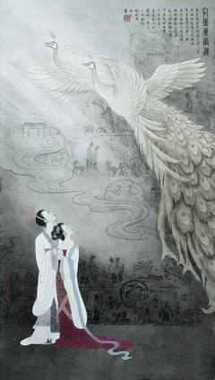

孔雀东南飞

《孔雀东南飞》是我国文学史上第一部长篇叙事诗，沈归愚称为“古今第一首长诗”，因此它也被称为我国古代史上最长的一部叙事诗,是我国古代民间文学中的光辉诗篇之一，《孔雀东南飞》与南北朝的《木兰辞》并称“乐府双璧”及“叙事诗双璧”。后又把《孔雀东南飞》、《木兰诗》与唐代韦庄的《秦妇吟》并称为“乐府三绝”取材于东汉献帝年间发生在庐江郡（治舒县，汉末迁皖县，均在今安徽境内）的一桩婚姻悲剧。 《孔雀东南飞》通过刘兰芝与焦仲卿这对恩爱夫妇的爱情悲剧，控诉了封建礼教、家长统治和门阀观念的罪恶，表达了青年男女要求婚姻爱情自主的合理愿望。女主人公刘兰芝对爱情忠贞不二，她对封建势力和封建礼教所作的不妥协的斗争，使她成为文学史上富有叛逆色彩的妇女形象，为后来的青年男女所传颂。